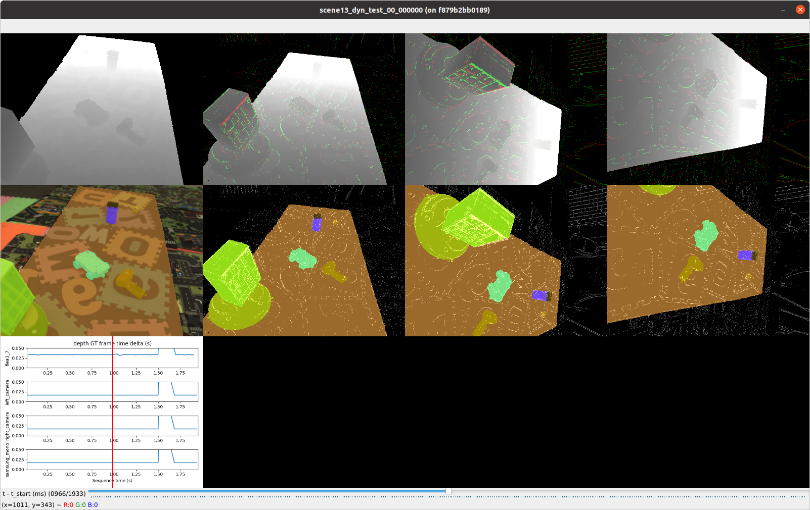

Inspecting an EVIMO2 v2 Sequence
An interactive visualizer is provided for quickly looking through an EVIMO2 v2 sequence in the NPZ format. A slider can be moved around to inspect all cameras in a sequence with millisecond precision.
Example usage:
./tools/evimo2_v2_inspect/view_sequence_all_cameras.py --idir ~/EVIMO/npz --seq scene13_dyn_test_00_000000
Example Image: 